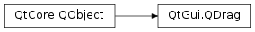

QDrag¶
Synopsis¶
Functions¶
- def
defaultAction() - def
dragCursor(action) - def
exec_([supportedActions=Qt.MoveAction]) - def
exec_(supportedActions, defaultAction) - def
hotSpot() - def
mimeData() - def
pixmap() - def
setDragCursor(cursor, action) - def
setHotSpot(hotspot) - def
setMimeData(data) - def
setPixmap(arg__1) - def
source() - def
start([supportedActions=Qt.CopyAction]) - def
supportedActions() - def
target()
Signals¶
- def
actionChanged(action) - def
targetChanged(newTarget)
Detailed Description¶
The
PySide2.QtGui.QDragclass provides support for MIME-based drag and drop data transfer.Drag and drop is an intuitive way for users to copy or move data around in an application, and is used in many desktop environments as a mechanism for copying data between applications. Drag and drop support in Qt is centered around the
PySide2.QtGui.QDragclass that handles most of the details of a drag and drop operation.The data to be transferred by the drag and drop operation is contained in a
PySide2.QtCore.QMimeDataobject. This is specified with thePySide2.QtGui.QDrag.setMimeData()function in the following way:drag = QDrag(self) mimeData = QMimeData() mimeData.setText(commentEdit.toPlainText()) drag.setMimeData(mimeData)Note that
PySide2.QtGui.QDrag.setMimeData()assigns ownership of thePySide2.QtCore.QMimeDataobject to thePySide2.QtGui.QDragobject. ThePySide2.QtGui.QDragmust be constructed on the heap with a parentPySide2.QtCore.QObjectto ensure that Qt can clean up after the drag and drop operation has been completed.A pixmap can be used to represent the data while the drag is in progress, and will move with the cursor to the drop target. This pixmap typically shows an icon that represents the MIME type of the data being transferred, but any pixmap can be set with
PySide2.QtGui.QDrag.setPixmap(). The cursor’s hot spot can be given a position relative to the top-left corner of the pixmap with thePySide2.QtGui.QDrag.setHotSpot()function. The following code positions the pixmap so that the cursor’s hot spot points to the center of its bottom edge:drag.setHotSpot(QPoint(drag.pixmap().width()/2, drag.pixmap().height()))Note
On X11, the pixmap may not be able to keep up with the mouse movements if the hot spot causes the pixmap to be displayed directly under the cursor.
The source and target widgets can be found with
PySide2.QtGui.QDrag.source()andPySide2.QtGui.QDrag.target(). These functions are often used to determine whether drag and drop operations started and finished at the same widget, so that special behavior can be implemented.
PySide2.QtGui.QDragonly deals with the drag and drop operation itself. It is up to the developer to decide when a drag operation begins, and how aPySide2.QtGui.QDragobject should be constructed and used. For a given widget, it is often necessary to reimplementPySide2.QtWidgets.QWidget.mousePressEvent()to determine whether the user has pressed a mouse button, and reimplementPySide2.QtWidgets.QWidget.mouseMoveEvent()to check whether aPySide2.QtGui.QDragis required.See also
Drag and Drop
PySide2.QtGui.QClipboardPySide2.QtCore.QMimeDataDraggable Icons Example Draggable Text Example Drop Site Example Fridge Magnets Example
-
class
PySide2.QtGui.QDrag(dragSource)¶ Parameters: dragSource – PySide2.QtCore.QObjectConstructs a new drag object for the widget specified by
dragSource.
-
PySide2.QtGui.QDrag.actionChanged(action)¶ Parameters: action – PySide2.QtCore.Qt.DropAction
-
static
PySide2.QtGui.QDrag.cancel()¶ Cancels a drag operation initiated by Qt.
Note
This is currently implemented on Windows and X11.
See also
exec()
-
PySide2.QtGui.QDrag.defaultAction()¶ Return type: PySide2.QtCore.Qt.DropActionReturns the default proposed drop action for this drag operation.
See also
-
PySide2.QtGui.QDrag.dragCursor(action)¶ Parameters: action – PySide2.QtCore.Qt.DropActionReturn type: PySide2.QtGui.QPixmapReturns the drag cursor for the
action.See also
-
PySide2.QtGui.QDrag.exec_(supportedActions, defaultAction)¶ Parameters: - supportedActions –
PySide2.QtCore.Qt.DropActions - defaultAction –
PySide2.QtCore.Qt.DropAction
Return type: PySide2.QtCore.Qt.DropActionStarts the drag and drop operation and returns a value indicating the requested drop action when it is completed. The drop actions that the user can choose from are specified in
supportedActions.The
defaultDropActiondetermines which action will be proposed when the user performs a drag without using modifier keys.Note
On Linux and macOS , the drag and drop operation can take some time, but this function does not block the event loop. Other events are still delivered to the application while the operation is performed. On Windows, the Qt event loop is blocked during the operation. However,
QDrag.exec()on Windows causes processEvents() to be called frequently to keep the GUI responsive. If any loops or operations are called while a drag operation is active, it will block the drag operation.- supportedActions –
-
PySide2.QtGui.QDrag.exec_([supportedActions=Qt.MoveAction]) Parameters: supportedActions – PySide2.QtCore.Qt.DropActionsReturn type: PySide2.QtCore.Qt.DropActionStarts the drag and drop operation and returns a value indicating the requested drop action when it is completed. The drop actions that the user can choose from are specified in
supportedActions. The default proposed action will be selected among the allowed actions in the following order: Move, Copy and Link.Note
On Linux and macOS , the drag and drop operation can take some time, but this function does not block the event loop. Other events are still delivered to the application while the operation is performed. On Windows, the Qt event loop is blocked during the operation.
See also
-
PySide2.QtGui.QDrag.hotSpot()¶ Return type: PySide2.QtCore.QPointReturns the position of the hot spot relative to the top-left corner of the cursor.
See also
-
PySide2.QtGui.QDrag.mimeData()¶ Return type: PySide2.QtCore.QMimeDataReturns the MIME data that is encapsulated by the drag object.
See also
-
PySide2.QtGui.QDrag.pixmap()¶ Return type: PySide2.QtGui.QPixmapReturns the pixmap used to represent the data in a drag and drop operation.
See also
-
PySide2.QtGui.QDrag.setDragCursor(cursor, action)¶ Parameters: - cursor –
PySide2.QtGui.QPixmap - action –
PySide2.QtCore.Qt.DropAction
Sets the drag
cursorfor theaction. This allows you to override the default native cursors. To revert to using the native cursor foractionpass in a nullPySide2.QtGui.QPixmapascursor.Note: setting the drag cursor for IgnoreAction may not work on all platforms. X11 and macOS has been tested to work. Windows does not support it.
See also
- cursor –
-
PySide2.QtGui.QDrag.setHotSpot(hotspot)¶ Parameters: hotspot – PySide2.QtCore.QPointSets the position of the hot spot relative to the top-left corner of the pixmap used to the point specified by
hotspot.Note
on X11, the pixmap may not be able to keep up with the mouse movements if the hot spot causes the pixmap to be displayed directly under the cursor.
See also
-
PySide2.QtGui.QDrag.setMimeData(data)¶ Parameters: data – PySide2.QtCore.QMimeDataSets the data to be sent to the given MIME
data. Ownership of the data is transferred to thePySide2.QtGui.QDragobject.See also
-
PySide2.QtGui.QDrag.setPixmap(arg__1)¶ Parameters: arg__1 – PySide2.QtGui.QPixmapSets
pixmapas the pixmap used to represent the data in a drag and drop operation. You can only set a pixmap before the drag is started.See also
-
PySide2.QtGui.QDrag.source()¶ Return type: PySide2.QtCore.QObjectReturns the source of the drag object. This is the widget where the drag and drop operation originated.
-
PySide2.QtGui.QDrag.start([supportedActions=Qt.CopyAction])¶ Parameters: supportedActions – PySide2.QtCore.Qt.DropActionsReturn type: PySide2.QtCore.Qt.DropActionNote
It is recommended to use
exec()instead of this function.Starts the drag and drop operation and returns a value indicating the requested drop action when it is completed. The drop actions that the user can choose from are specified in
request.Qt.CopyActionis always allowed.Note
Although the drag and drop operation can take some time, this function does not block the event loop. Other events are still delivered to the application while the operation is performed.
See also
exec()
-
PySide2.QtGui.QDrag.supportedActions()¶ Return type: PySide2.QtCore.Qt.DropActionsReturns the set of possible drop actions for this drag operation.
See also
-
PySide2.QtGui.QDrag.target()¶ Return type: PySide2.QtCore.QObjectReturns the target of the drag and drop operation. This is the widget where the drag object was dropped.
-
PySide2.QtGui.QDrag.targetChanged(newTarget)¶ Parameters: newTarget – PySide2.QtCore.QObject
© 2018 The Qt Company Ltd. Documentation contributions included herein are the copyrights of their respective owners. The documentation provided herein is licensed under the terms of the GNU Free Documentation License version 1.3 as published by the Free Software Foundation. Qt and respective logos are trademarks of The Qt Company Ltd. in Finland and/or other countries worldwide. All other trademarks are property of their respective owners.